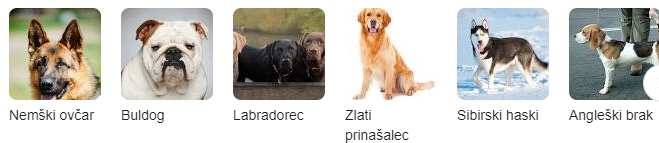

ČUTILA
Vid
Vid je za mačke zelo pomemben. Mačje oči so ustvarjene za nočni lov in hitro opazijo nenadno gibanje plena. So velike in obrnjene naprej, da lahko na nočnem pohodu sprejmejo velike količine svetlobe. Lega oči omogoča stereoskopsko vidno polje, s čimer mačka zelo dobro oceni globino in s tem razdaljo. To uporabi pri napadu na plen, prav tako kot sova. Kot tega vidnega polja je pri mački 85°, pri konju 65° in pri človeku 120º, kar pomeni, da človek vidi izredno plastično. Mačke v temi odlično vidijo tudi zaradi odbojnih celic (Tapetum lucidum), ki svetlobo z mrežnice odbijejo nazaj na mrežnico (učinek ogledala), kjer so vidni čepki in paličice. Tako se učinek svetlobe podvoji. Ta refleksija je 130-krat močnejša kot pri človeku. Odvečno odbito svetlobo vidimo, če mački ponoči posvetimo v oči.
Sluh
Poleg odličnega vida mački v temi pomaga izreden sluh. Mačja ušesa so temu prilagojena.Sliši tudi ultrazvok. Nizke tone sliši slabše, zato se bolj odziva ženskam kot moškim. Dokazano je, da so mačke z modrimi očmi in belim kožuhom genetsko bolj nagnjene h gluhosti.
Voh
Mačka ima tudi odličen voh, vendar se pri lovu nanj ne zanaša. Z nosom samo preverja hrano in bere ''sporočila'' drugih mačk. Mačje čutilo za voh je tridesetkrat občutljivejše od človeškega.
Tip
Mačkin tip je z občutljivimi dlakami (tako na zapestjih kot na gobčku) zelo razvit. Tipajo z brčicami. Ko te zaznajo oviro, podatek sporočijo možganom itd.
Najdebelejša mačka vseh časov je bila Himmy iz avstralije, ki je imela 21 kg. Druge znane debele mačke so pa Meow in Patches.
PASME
To je le par pasm mačk. V letu 2024 so jih našteli med 42 in 100!!!!
OPISI
Tukaj bo par opisov mačk.

Legenda o nastanku mačk
Po legendi naj bi mačke nastale leta 4000 pr. n. št. na Noetovi barki med veliko povodnijo. Miši so se kljub Božji prepovedi namnožile in tako odžirale preveč živeža. Noe ni vedel, kaj naj naredi in med globokim razmišljanjem božal leva po glavi. Lev je kmalu kihnil in izpljunil par mačk. Mački sta se takoj lotili dela in pojedli vse miši.